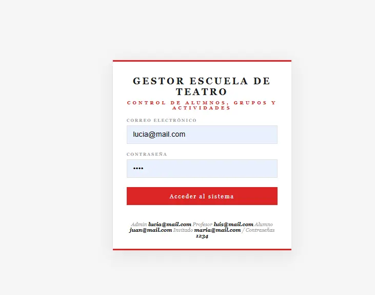
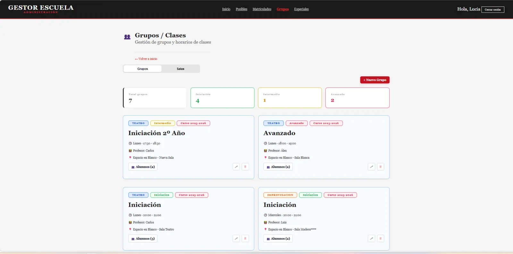
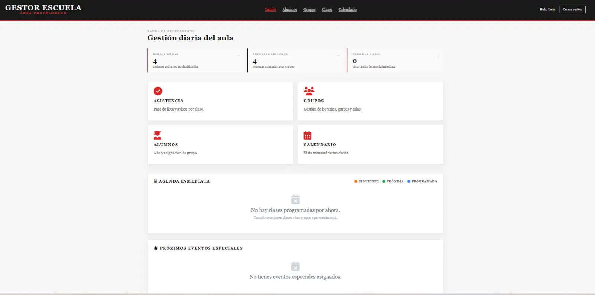
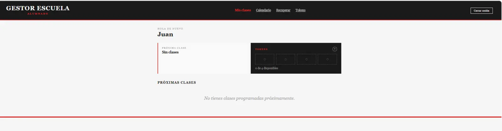
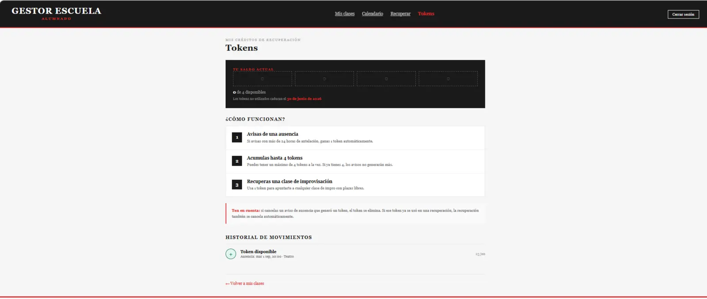

01 · Resumen ejecutivo
Una aplicación completa para un dominio con reglas reales
El Gestor Escuela de Teatro nació en un contexto formativo y de prácticas. Su objetivo es reunir en una sola aplicación procesos que afectan a administración, profesorado y alumnado.
- Tipo
- Aplicación web de gestión
- Contexto
- Proyecto formativo y de prácticas
- Mi foco inicial
- Área de Administración
- Evolución posterior
- Mejoras personales en los tres roles
02 · Problema y usuarios
Coordinar información y acciones entre tres perfiles
Una escuela necesita mantener conectados horarios, espacios, grupos, matrículas, eventos y asistencia. La aplicación diferencia qué puede consultar y gestionar cada perfil para reducir errores y ofrecer a cada usuario solo las acciones que necesita.
Administrador
Gestiona alumnos, grupos, salas, matrículas, clases y eventos.
Profesor
Consulta sus grupos y clases, registra asistencia y trabaja con observaciones.
Alumno
Consulta clases, avisa ausencias y gestiona recuperaciones mediante tokens.
03 · Alcance del sistema
Funcionalidades presentes en la aplicación
Estas funciones describen el alcance colectivo del proyecto y no se atribuyen íntegramente a una sola persona.
- Autenticación y redirección según rol.
- Dashboard y gestión de alumnos posibles y matriculados.
- Gestión de grupos, salas, horarios y clases recurrentes.
- Eventos especiales con inscripciones y profesor responsable.
- Registro de asistencia de clases y eventos.
- Flujo de ausencias, tokens y recuperación de clases.
- Validaciones de aforo y conflictos de horario o sala.
04 · Participación
Qué pertenece al proyecto y qué puedo demostrar como aportación
Participación inicial
Trabajé principalmente en la vista y las funcionalidades del rol Administrador dentro de un proyecto desarrollado en equipo.
Trabajo posterior
Continué el proyecto personalmente mediante corrección de errores, mantenimiento y mejoras funcionales y de interfaz en Administración, Profesor y Alumno.
La case study evita atribuirme autenticación, base de datos, tokens u otras funciones iniciales sin evidencia individual suficiente.
05 · Arquitectura
Estructura monolítica inspirada en MVC
La aplicación utiliza un punto de entrada común, enrutado manual, controladores por área y vistas PHP separadas. Las consultas MySQL se realizan mediante mysqli desde los controladores.
- NavegadorPetición del usuario
- index.phpFront controller
- RouterSelecciona la ruta
- ControladorLógica y consultas
- Vista + MySQLRespuesta y datos
No la presento como un MVC completo: los modelos tienen poco desarrollo y parte de la lógica y las consultas permanecen en controladores extensos.
06 · Base de datos
Entidades conectadas mediante relaciones y restricciones
El modelo incluye usuarios, profesores, administradores, alumnos, grupos, salas, clases, asistencias, tokens, recuperaciones, eventos e inscripciones.
07 · Retos y decisiones
Mantener coherencia entre permisos, datos e interfaz
Permisos por rol
Las rutas y acciones deben comprobar la sesión y el perfil antes de mostrar o modificar datos.
Conflictos de agenda
Las clases necesitan validaciones para evitar solapamientos de profesor y sala.
Asistencia reutilizable
El pase de lista se adaptó para trabajar tanto con clases ordinarias como con eventos especiales.
Evolución de la base de datos
Las mejoras de eventos exigieron mantener sincronizados código, relaciones y proceso de instalación.
08 · Mejoras personales verificables
Evolución posterior del proyecto
- Mejoras en gestión de grupos y creación de cursos.
- Rediseño de la presentación de grupos y salas.
- Asignación de profesor responsable en eventos especiales.
- Filtrado de eventos para cada profesor.
- Incorporación de eventos al panel del Profesor.
- Pase de lista de eventos mediante un componente reutilizable.
- Corrección del instalador para crear el esquema necesario.
09 · Interfaz real
Capturas de los tres roles
Las imágenes proceden de la versión publicada en el repositorio y utilizan únicamente datos de demostración.





10 · Aprendizajes
Qué me ha aportado trabajar sobre una aplicación existente
El proyecto me ha permitido comprender mejor cómo una decisión aparentemente local puede afectar a controladores, vistas, rutas y base de datos. También ha reforzado la importancia de comprobar permisos en servidor, documentar los cambios y mantener una instalación reproducible.
11 · Estado actual
Repositorio público y ejecución local
El código, las instrucciones de instalación y las capturas están disponibles en GitHub. La aplicación necesita PHP y MySQL, por lo que no se ofrece una demo pública en GitHub Pages.
El repositorio se presenta como proyecto en mejora continua. Antes de desplegarlo en un servidor público conviene completar una revisión específica de configuración, seguridad y datos de demostración.